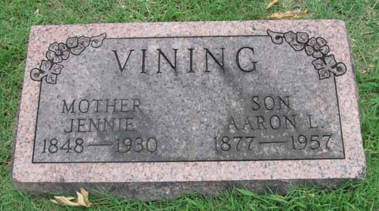

Census Data
| 1910 | 1920 | 1930 | 1940 | |
| Aaron Lee Vining | 30 | 42 | [illegible] | 62 |
| Carrie (Carson) Vining | 25 | [not given] | 41 | 54 |
| Jennie C. Vining | 5 | 15 | 25 | living in separate household |
| Mary Ruth Vining | 4 years, 6 months | 13 | 24 |


Death Data
Headstone for Aaron Lee Vining and mother Jennie (Lindsley) Vining, in Neodesha City Cemetery, Neodesha, Wilson County, Kansas (from Find A Grave):